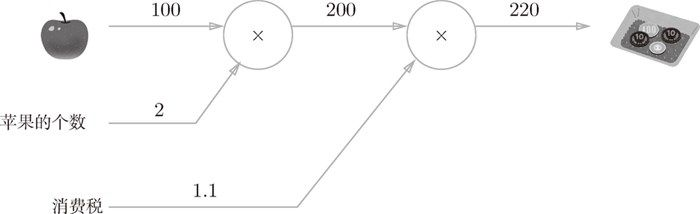
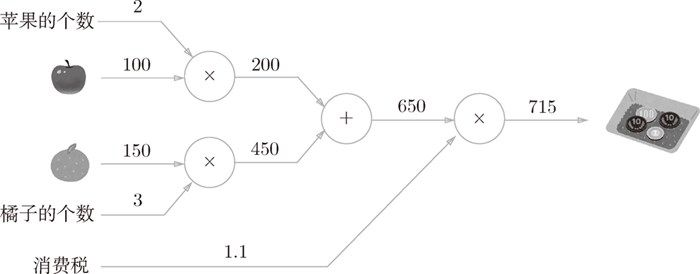
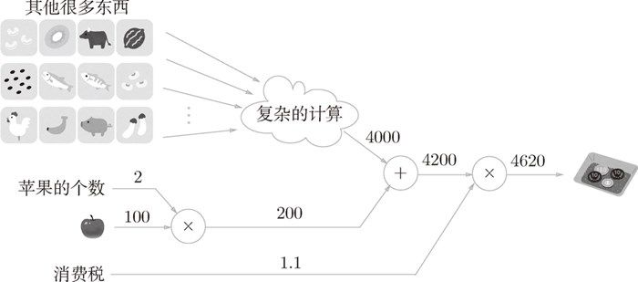
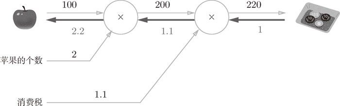

比如，组装汽车是一个复杂的工作，通常需要进行“流水线”作业。每个工人（机器）所承担的都是被简化了的工作，这个工作的成果会传递给下一个工人，直至汽车组装完成。计算图将复杂的计算分割成简单的局部计算，和流水线作业一样，将局部计算的结果传递给下一个节点。在将复杂的计算分解成简单的计算这一点上与汽车的组装有相似之处。
比如，组装汽车是一个复杂的工作，通常需要进行“流水线”作业。每个工人（机器）所承担的都是被简化了的工作，这个工作的成果会传递给下一个工人，直至汽车组装完成。计算图将复杂的计算分割成简单的局部计算，和流水线作业一样，将局部计算的结果传递给下一个节点。在将复杂的计算分解成简单的计算这一点上与汽车的组装有相似之处。
计算图将计算过程用图形表示出来。这里说的图形是数据结构图，通过多个节点和边表示（连接节点的直线称为“边”）。为了让大家熟悉计算图，本节先用计算图解一些简单的问题。从这些简单的问题开始，逐步深入，最终抵达误差反向传播法。
现在，我们尝试用计算图解简单的问题。下面我们要看的几个问题都是用心算就能解开的简单问题，这里的目的只是通过它们让大家熟悉计算图。掌握了计算图的使用方法之后，在后面即将看到的复杂计算中它将发挥巨大威力，所以本节请一定学会计算图的使用方法。
问题 1：太郎在超市买了 2 个 100 日元一个的苹果，消费税是 10%，请计算支付金额。
计算图通过节点和箭头表示计算过程。节点用○表示，○中是计算的内容。将计算的中间结果写在箭头的上方，表示各个节点的计算结果从左向右传递。用计算图解问题 1，求解过程如图 5-1 所示。
图 5-1 基于计算图求解的问题 1 的答案
如图 5-1 所示，开始时，苹果的 100 日元流到“× 2”节点，变成 200 日元，然后被传递给下一个节点。接着，这个 200 日元流向“× 1.1”节点，变成 220 日元。因此，从这个计算图的结果可知，答案为 220 日元。
虽然图 5-1 中把“× 2”“× 1.1”等作为一个运算整体用○括起来了，不过只用○表示乘法运算“×”也是可行的。此时，如图 5-2 所示，可以将“2”和“1.1”分别作为变量“苹果的个数”和“消费税”标在○外面。

图 5-2 基于计算图求解的问题 1 的答案：“苹果的个数”和“消费税”作为变量标在○外面
再看下一题。
问题 2：太郎在超市买了 2 个苹果、3 个橘子。其中，苹果每个 100 日元，橘子每个 150 日元。消费税是 10%，请计算支付金额。
同问题 1，我们用计算图来解问题 2，求解过程如图 5-3 所示。

图 5-3 基于计算图求解的问题 2 的答案
这个问题中新增了加法节点“+”，用来合计苹果和橘子的金额。构建了计算图后，从左向右进行计算。就像电路中的电流流动一样，计算结果从左向右传递。到达最右边的计算结果后，计算过程就结束了。从图 5-3 中可知，问题 2 的答案为 715 日元。
综上，用计算图解题的情况下，需要按如下流程进行。
- 构建计算图。
- 在计算图上，从左向右进行计算。
这里的第 2 歩“从左向右进行计算”是一种正方向上的传播，简称为正向传播（forward propagation）。正向传播是从计算图出发点到结束点的传播。既然有正向传播这个名称，当然也可以考虑反向（从图上看的话，就是从右向左）的传播。实际上，这种传播称为反向传播（backward propagation）。反向传播将在接下来的导数计算中发挥重要作用。
计算图的特征是可以通过传递“局部计算”获得最终结果。“局部”这个词的意思是“与自己相关的某个小范围”。局部计算是指，无论全局发生了什么，都能只根据与自己相关的信息输出接下来的结果。
我们用一个具体的例子来说明局部计算。比如，在超市买了 2 个苹果和其他很多东西。此时，可以画出如图 5-4 所示的计算图。

图 5-4 买了 2 个苹果和其他很多东西的例子
如图 5-4 所示，假设（经过复杂的计算）购买的其他很多东西总共花费 4000 日元。这里的重点是，各个节点处的计算都是局部计算。这意味着，例如苹果和其他很多东西的求和运算（4000 + 200 → 4200）并不关心 4000 这个数字是如何计算而来的，只要把两个数字相加就可以了。换言之，各个节点处只需进行与自己有关的计算（在这个例子中是对输入的两个数字进行加法运算），不用考虑全局。
综上，计算图可以集中精力于局部计算。无论全局的计算有多么复杂，各个步骤所要做的就是对象节点的局部计算。虽然局部计算非常简单，但是通过传递它的计算结果，可以获得全局的复杂计算的结果。
前面我们用计算图解答了两个问题，那么计算图到底有什么优点呢？一个优点就在于前面所说的局部计算。无论全局是多么复杂的计算，都可以通过局部计算使各个节点致力于简单的计算，从而简化问题。另一个优点是，利用计算图可以将中间的计算结果全部保存起来（比如，计算进行到 2 个苹果时的金额是 200 日元、加上消费税之前的金额 650 日元等）。但是只有这些理由可能还无法令人信服。实际上，使用计算图最大的原因是，可以通过反向传播高效计算导数。
在介绍计算图的反向传播时，我们再来思考一下问题 1。问题 1 中，我们计算了购买 2 个苹果时加上消费税最终需要支付的金额。这里，假设我们想知道苹果价格的上涨会在多大程度上影响最终的支付金额，即求“支付金额关于苹果的价格的导数”。设苹果的价格为 x，支付金额为 L，则相当于求  。这个导数的值表示当苹果的价格稍微上涨时，支付金额会增加多少。
。这个导数的值表示当苹果的价格稍微上涨时，支付金额会增加多少。
如前所述，“支付金额关于苹果的价格的导数”的值可以通过计算图的反向传播求出来。先来看一下结果，如图 5-5 所示，可以通过计算图的反向传播求导数（关于如何进行反向传播，接下来马上会介绍）。

图 5-5 基于反向传播的导数的传递
如图 5-5 所示，反向传播使用与正方向相反的箭头（粗线）表示。反向传播传递“局部导数”，将导数的值写在箭头的下方。在这个例子中，反向传播从右向左传递导数的值（1 → 1.1 → 2.2）。从这个结果中可知，“支付金额关于苹果的价格的导数”的值是 2.2。这意味着，如果苹果的价格上涨 1 日元，最终的支付金额会增加 2.2 日元（严格地讲，如果苹果的价格增加某个微小值，则最终的支付金额将增加那个微小值的 2.2 倍）。
这里只求了关于苹果的价格的导数，不过“支付金额关于消费税的导数”“支付金额关于苹果的个数的导数”等也都可以用同样的方式算出来。并且，计算中途求得的导数的结果（中间传递的导数）可以被共享，从而可以高效地计算多个导数。综上，计算图的优点是，可以通过正向传播和反向传播高效地计算各个变量的导数值。